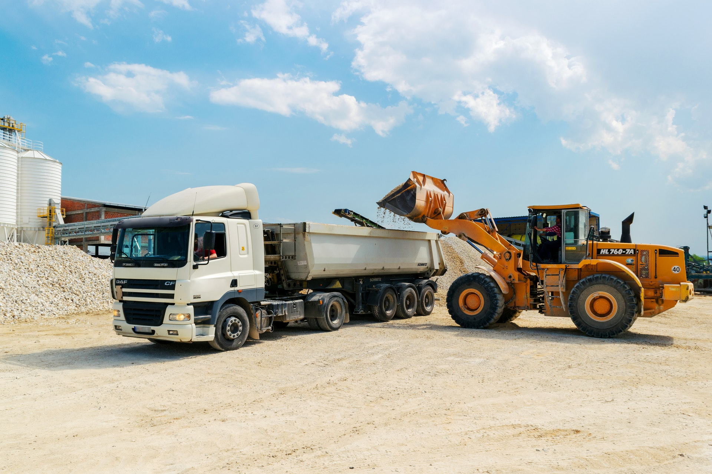

BABURAO LORRY SERVICES
dno 3-97 near cheruvu madhavapatnam kakinada 533005
ABOUT US SERVICES CONTACT US REGISTER
BABURAO LORRY TRANSPORT AND SERVICES
ABOUT

Whether it is shifting an office or home, it has been a daunting task for years. There will be hundreds of things you need to take care of starting from hiring a reliable transportation company, till unloading all the things at the new destination. And if it's not about hiring a professional moving company, then you will have to check out for 407 lorry, standard lorry, EICHER or any dost lorry rentals. And for this, you need to spend hours together in determining the vehicle, then the cost of shifting and all such. But, with baburao Trans, you just have to hire them and enjoy your trip free from worries!
We, with a widespread fleet of almost all the latest vehicle available, provide you with the best transportation service and assure you to get your valuables delivered at the right destination at the right time. Whether it is the 407 lorry rentals or mini lorry rentals, andhrapradesh has hundreds of companies to offer services at competitive rates. But, there's only a few that stand out for the incomparable services offered.
We, with our motto of customer satisfaction, provide a variety of services including lorry rentals. Shifting an office or home in andhrapradesh is around 3 times harder than any other cities, without a professional moving company. When compared to any other moving company, baburao Trans has stood out from the rest and has made its mark as the best transportation service in AP.
It's not just about transportation, baburao Trans is one of the best packers and movers in AP, that offer high quality service at the most affordable rate. We, over years, have proved to be the professionals, you can trust for shifting your home or office. If you are looking for a reliable moving company or for 407 lorry rentals, then you are with the right team. Call us today, to know the best offers and moving packages and plan your move within a few minutes with us.
| sno | service | charge |
| 1 | goods lorry | 5000/- per day |
| 2 | oil tanker | 6000/- per day |
| 3 | petrol tanker | 8000/- perday |
| 4 | trucks | 5000/- perday |